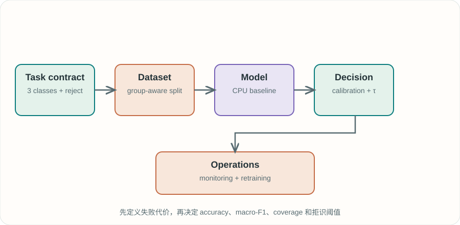
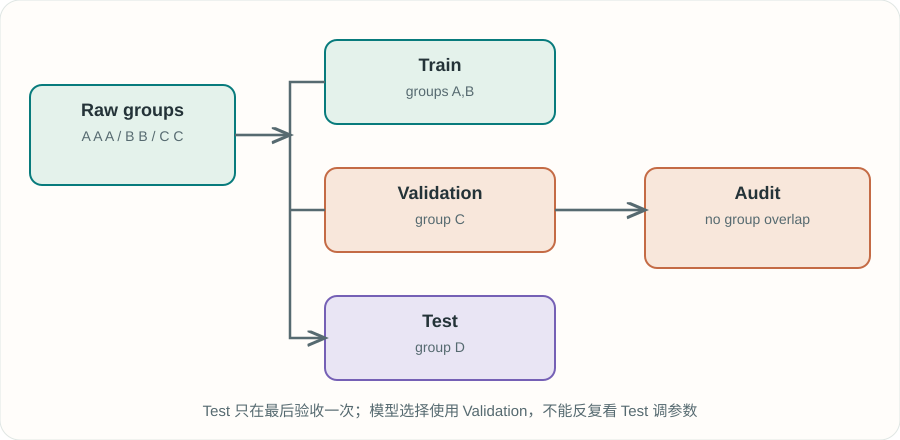
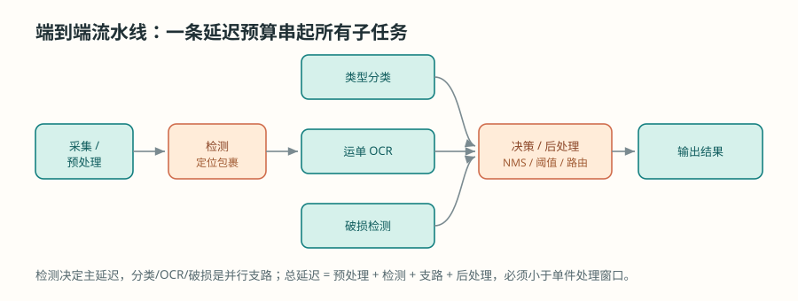
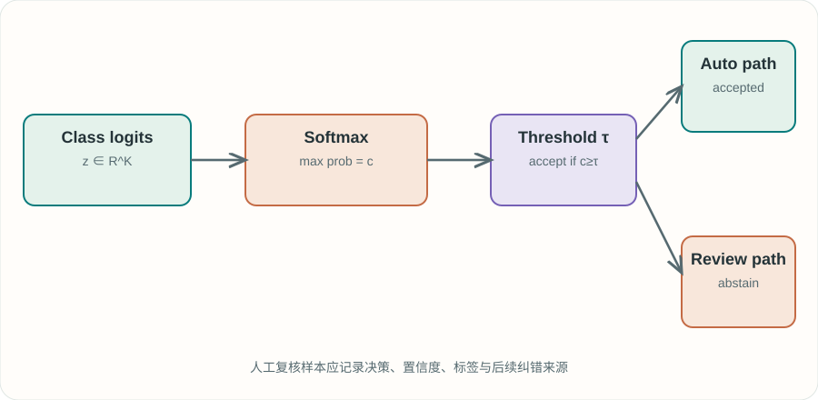
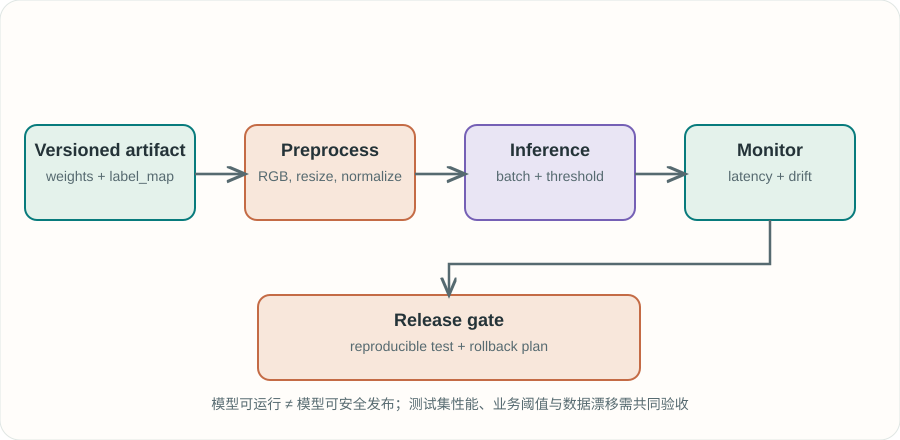

CHAPTER 28 · END-TO-END VISION ENGINEERING
从数据到上线：一个可复现的视觉项目
从一个明确的质量检测任务出发，建立组级数据划分、最小训练循环、可解释的指标、置信度拒识和可回滚模型工件。所有教学实验在 CPU 上运行，方便把理念迁移到真实视觉工程。
项目契约：定义错误成本与验收指标
假设要在一条产线上用摄像头对产品照片做质量分流，类别包括 normal（正常）、scratch（划痕）和 dent（凹陷）。真正需要的是一个可回归验证的系统，不只是运行一次 model.predict。误报可能浪费人工质检时间；漏报则可能让缺陷产品流出，因此应先给出任务约束、错误成本和人工复核流程。
在数据集规模足够之前，暂时用两类别的合成 8×8 灰度图像构造端到端演示：横线/竖线，验证训练循环、损失、指标和发布契约。该玩具例子不等同于真实产品缺陷识别，更不代表任何生产质量指标。由实验过渡到真实项目时，要改用经授权的真实样本和领域一致的标注规范。

定义线上通过标准，例如：固定测试集 macro-F1 不低于业务阈值、缺陷漏检率在可接受范围、P95 端到端延迟符合设备预算，且每一笔拒识样本都有可追溯的人工复核流程。这里不预设具体 SLA 数字，因为真实门槛必须来自现场成本、数据与硬件测量。
数据清单与分组切分
一批数据不能只包含图片文件。每条记录至少需要 image_id、采集设备/产线、时间或批次、目标标签、原始图像哈希和标注版本。对于视频帧、同一件产品多角度照片或同一病人的多张切片，样本之间高度相关：随机逐图切分会让训练、验证和测试共享同源视觉细节。
正确策略是先按 group_id 将数据拆分成 train/validation/test，再只对训练集合做随机增强。Validation 用于超参数与阈值选择，Test 用于最终独立验收。类别数、组数很少时需要调整验证协议、增加组或做交叉验证，不能伪造足够大的独立测试集。

建立最小能复现的分类基线
在选择复杂 backbone 之前，先确认数据张量和训练循环都正确。约定输入为 [N, 1, 8, 8] 的浮点 tensor，像素区间在本 toy generator 中由随机噪声与二值线条构造；标签为 [N] 的整数索引。模型由 Flatten 和 Linear(64→2) 组成，输出两个未归一化 logits，而不是提前调用 softmax。torch.nn.CrossEntropyLoss 内部包含 log-softmax 与负对数似然。
训练时执行 zero_grad()、前向、计算 loss、backward()、optimizer.step()；验证与推理切换 model.eval() 并使用 torch.no_grad()。复杂 CNN 的 batch normalization 和 dropout 对 train/eval 的区别尤其敏感。所有训练实验至少记录随机种子、依赖版本、数据哈希、split manifest、模型参数与优化器配置。

固定随机种子能够改善复现性，但不能保证跨 PyTorch release、CPU/GPU 或不同硬件完全逐位相同。遇到非确定性算子时，可启用 torch.use_deterministic_algorithms 检查或限制算子；对多进程 DataLoader 还需要配置 worker seed 与 generator。
混淆矩阵、宏平均与拒识策略
总体 accuracy 会受到正常样本占比影响。若 98% 产品正常，一个永远预测 normal 的分类器也可能得到非常高的总体 accuracy，却完全漏掉缺陷。必须查看每类 precision、recall、F1、混淆矩阵和业务关键类别的漏检率。对 K 个类别，macro-F1 对每类 F1 等权平均，因此在小类上失败会被清楚显示。
TP、FP、FN 都按“以类别 c 为正例，其它类别为负例”的 one-vs-rest 口径统计。
分母为 0 的类别应按预先声明的 zero_division 协议处理；公式默认分母非零。
一个工程上有用的策略是拒识（abstention）：若模型 softmax 最大值低于阈值 τ，则不自动给出最终类别，而交给人工复核。阈值提高通常降低自动处理覆盖率，但被接受样本的准确率变化必须在验证集上实际测量，不能只靠直觉保证。

可以采用温度缩放、可靠性图、ECE（Expected Calibration Error）等方法分析校准，但它们要求明确验证集、分箱方案与任务条件。真实业务应按设备、产线、光照和缺陷类别切片评估错误，以免总体指标掩盖某个风险子群。
序列化模型需要保存哪些信息
模型文件应该包含或关联以下信息：结构与权重版本、label_map（类别 ID 顺序）、图像解码/颜色空间、resize/crop/normalize 参数、输入 dtype 与 shape、训练数据与划分清单哈希、关键依赖与评估记录。PyTorch 推荐保存 state_dict，加载时在受控模型结构上恢复，避免把任意外部 pickle 对象直接作为可信代码执行。
离线的最小工件可以是一个装有 state_dict、类别映射和预处理字典的 checkpoint，并结合 manifest 写入 SHA-256。生产环境通常还要附上部署格式（例如 ONNX）、签名/来源信息、数值回归测试和回滚工件。每次更换 preprocess、label ID 或模型权重，应视为新版本，而不只是覆盖旧文件。

上线门禁：数值一致性与监控
导出 ONNX、构建 TensorRT 或部署到边缘端时应做模型输入输出一致性测试：固定测试向量在训练侧与部署侧的输出 shape、数值容差和最终类别要可对照。对动态输入形状，还应验证合法范围内的 min/opt/max 和错误输入处理。不同硬件/算子精度可能存在数值差异，因此容差需要按 dtype 和任务需求确定。
线上服务除了 P50 延迟还应报告 P95/P99、吞吐与峰值内存；监控分布漂移、拒识率和人工复核后的错误类型。真实标签可能延迟抵达，应保存预测版本、采集时间和真实结果的关联机制，才能构建再训练闭环。
发布前设立失败即阻断的质量门禁：缺失 label_map、预处理不匹配、分组泄漏、关键类别召回过低、数值回归超阈值或设备内存不足，都应该拒绝上线。日志必须处理好敏感数据和留存周期，不能把原始图像无限期上传作为默认设置。
四个独立可运行实验
以下脚本均在 CPU 上执行，不依赖外部下载、真实图片或预训练权重。它们证明的是工程契约可验证，不是一套真实工业视觉系统的性能报告。每段代码都可单独复制、运行并使用断言检查预期。
1. Group-aware split：保证数据源不跨集合
import random
records = [(group, i) for group in "ABCDEF" for i in range(3)]
groups = list("ABCDEF")
random.Random(7).shuffle(groups)
train, val, test = set(groups[:4]), set(groups[4:5]), set(groups[5:])
splits = {
"train": [r for r in records if r[0] in train],
"val": [r for r in records if r[0] in val],
"test": [r for r in records if r[0] in test],
}
train_groups = {g for g,_ in splits["train"]}
val_groups = {g for g,_ in splits["val"]}
test_groups = {g for g,_ in splits["test"]}
assert not train_groups & val_groups
assert not train_groups & test_groups
assert not val_groups & test_groups
assert sum(len(x) for x in splits.values()) == 18
print("group-aware samples:", {k: len(v) for k,v in splits.items()})2. 合成 8×8 图像分类器：训练、验证与张量契约
import torch
from torch import nn
torch.manual_seed(5)
N = 80
images = 0.1*torch.randn(N,1,8,8)
labels = (torch.arange(N)%2).long()
for i in range(N):
if labels[i] == 0:
images[i,0,3:5,:] += 1.0 # horizontal stripe
else:
images[i,0,:,3:5] += 1.0 # vertical stripe
model = nn.Sequential(nn.Flatten(), nn.Linear(64,2))
optimizer = torch.optim.Adam(model.parameters(),lr=0.03)
for step in range(35):
optimizer.zero_grad()
logits = model(images[:60])
loss = nn.functional.cross_entropy(logits,labels[:60])
loss.backward()
optimizer.step()
model.eval()
with torch.no_grad():
pred = model(images[60:]).argmax(dim=1)
accuracy = (pred==labels[60:]).float().mean().item()
assert logits.shape == (60,2)
assert accuracy >= 0.95
print("toy held-out accuracy:",accuracy)3. 分类置信度拒识：coverage 与 conditional accuracy
import torch
# Probability rows are illustrative: prediction class is argmax.
p = torch.tensor([[.95,.05],[.54,.46],[.15,.85],[.32,.68],[.88,.12]])
truth = torch.tensor([0,1,1,0,0])
prediction = p.argmax(1)
confidence = p.max(1).values
accepted = confidence >= 0.7
correct = prediction==truth
coverage = accepted.float().mean()
accepted_accuracy = correct[accepted].float().mean()
confusion = torch.zeros(2,2,dtype=torch.long)
for t,pr in zip(truth,prediction):
confusion[t,pr] += 1
assert confusion.sum() == len(truth)
assert accepted.tolist() == [True,False,True,False,True]
assert abs(float(coverage)-0.6) < 1e-6
assert abs(float(accepted_accuracy)-1.0) < 1e-6
print("coverage:",float(coverage),"accepted accuracy:",float(accepted_accuracy))4. 可信工件：state_dict、label map、预处理与哈希
import hashlib
import tempfile
from pathlib import Path
import torch
from torch import nn
torch.manual_seed(12)
original = nn.Linear(4,2)
spec = {
"model": original.state_dict(),
"labels": {0:"normal",1:"defect"},
"preprocess": {"channels":"grayscale","flat_dim":4},
}
sample = torch.randn(3,4)
with tempfile.TemporaryDirectory() as tmp:
path = Path(tmp)/"checkpoint.pt"
torch.save(spec,path)
loaded = torch.load(path, map_location="cpu", weights_only=True)
restored = nn.Linear(4,2)
restored.load_state_dict(loaded["model"])
digest = hashlib.sha256(path.read_bytes()).hexdigest()
assert torch.allclose(original(sample),restored(sample))
assert loaded["labels"][1] == "defect"
assert loaded["preprocess"]["flat_dim"] == 4
assert len(digest) == 64
print("state_dict parity and manifest verified")把玩具实验迁移到真实项目
真正落地时，先从组织拥有使用权限的数据中选取一个狭窄、可明确定义的视觉问题，并让标注团队建立可复审的标签规范。按 group 划分样本后，先训练最简单的线性或小型 CNN 基线，记录每个 group 的错误。确认没有数据泄漏和预处理偏差，再尝试预训练 backbone、冻结/解冻或参数高效适配。
选择目标检测或分割而非分类时，输出契约需要相应变化：检测器输出 boxes/classes/scores，必须定义 IoU 与 AP 协议；分割器输出 masks，必须对 mask 与 image 同步增强；视频模型还需考虑时序一致性和多帧关联。
这套项目工作流的终点不是“模型成功保存”，而是：任何贡献者能够从 data manifest、代码、配置与工件版本重现一项数值结果；在上线前验证关键业务约束；上线后能够发现退化、归因、回滚并重新审计。
理解检查：只保存模型 weights，为什么不能保证线上输出一致？
因为输入颜色空间、归一化、resize/crop、类别 ID 顺序和推理阈值都会改变实际预测。必须将这些契约与权重绑定版本并做端到端回归测试。
参考资料与工程规范
- PyTorch: Reproducibility（随机数、算法确定性、DataLoader workers）
- PyTorch: Saving and Loading Models（state_dict / weights_only）
- PyTorch: Transfer Learning for Computer Vision
- PyTorch: CrossEntropyLoss（logits、target 与 reduction）
- scikit-learn: GroupShuffleSplit（分组划分）
- scikit-learn: classification_report（precision / recall / F1）
- NIST AI Risk Management Framework（应用风险治理）